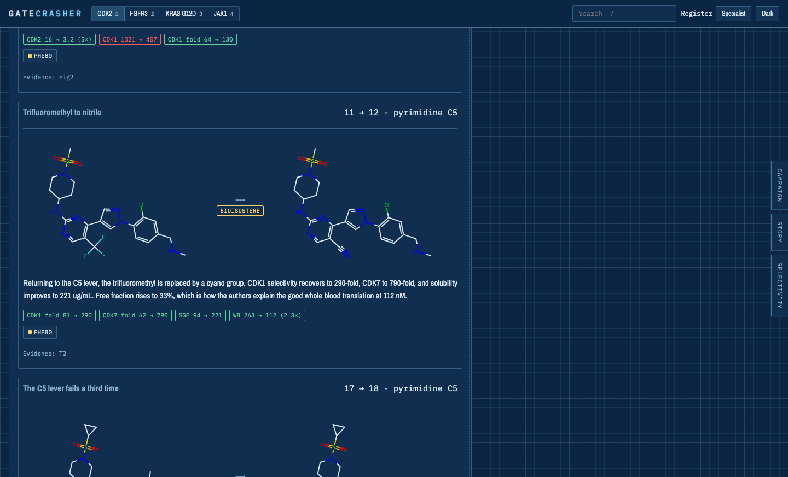

Four drug discovery campaigns, opened up: the pocket, the structure-activity relationships, the chemical edits, and the structural basis of selectivity.
| 🌐 App | gatecrasher.mdeller.com |
| ✉️ Contact | marc@marcdeller.com |
| 📦 Repository | github.com/bellcheddar/GATECRASHER |

Why it matters: a published medicinal chemistry paper tells you what was made and what it did, but the reasoning that connects one compound to the next is spread across tables, figures and a supporting information file, and the structural basis for it sits in a database somewhere else. GATECRASHER puts them in one place and makes them click through to each other: select a residue in three dimensions and the compound table filters to the molecules whose edits cite it; select a compound and its ligand appears in the pocket, its point lights up on every plot, and the edit log scrolls to the changes that made it. Every number on screen carries the table or figure it came from, and the build fails if one does not. It is useful for anyone who wants to see how a drug was actually designed: structural biologists and medicinal chemists who want the contacts and the R-group tables, and everyone else who wants to understand in thirty seconds what the molecule does and why it was hard.
Each is a selectivity problem solved at a pocket, then carried over the line by property work.
| Campaign | Target, and what had to be spared | Structures | The move it turns on |
|---|---|---|---|
| CDK2 (Hummel et al. 2024) | CDK2/cyclin E1, sparing CDK1, 4, 6, 7, 9 | 8UV0 | A screening hit that was really a JAK2 inhibitor: an sp3 aminopiperidine erased JAK2 and found CDK2 |
| FGFR2/3 (Shvartsbart et al. 2022) | FGFR2 and FGFR3 including gatekeeper mutants, sparing FGFR1 | 8E1X, 4K33 | A hydrogen bond designed on a docking model, then confirmed and partly contradicted by the crystal structure |
| KRAS G12D (Ye et al. 2025) | KRAS G12D, sparing wild-type KRAS | 9E5F, 9E5D | A thousand-fold of binding potency given away on purpose, for oral exposure |
| JAK1 (Zhuo et al. 2026) | JAK1, sparing JAK2 | 10PI, 10PJ | One ligand crystallised in both the target and the anti-target: the only true twin in the set |
Marc C. Deller is a co-author on all four papers, contributing the protein crystallography.
| Compounds | 91, every one with a verified structure |
| Measurements | 859, each carrying the table or figure it was printed in |
| Structures | 7 deposited entries |
| Residues | 1,786 annotated with secondary structure and motif |
| Edits | 56 designed changes, with their consequences and structural basis |
| Story beats | 20, in a specialist and a plain register |
No compound structure in this repository was drawn by hand and trusted. Each one is verified, and the notes column of every compounds.tsv records how strongly:
| Strength | Meaning |
|---|---|
ligand-verified |
Matches the chemical component deposited in the PDB, atom for atom |
name-verified |
The paper's own IUPAC name, parsed with OPSIN, agrees atom for atom |
source-verified |
Fetched from PubChem and checked against the published formula |
anchor-derived |
Built with RDKit molzip from a verified core by one documented substitution |
figure-derived |
Read from a drawing, with no name and no coordinates to check it against. The weakest, and flagged as such wherever it appears |
A molecular formula check is not enough, and this is not a theoretical concern. While curating the FGFR bundle, a hand-built scaffold reproduced the paper's published formula exactly while having the wrong connectivity: in a SMILES prefix fragment the bond to the next atom comes from the fragment's last atom, so every cyclic ether had attached through a ring carbon with its oxygen left dangling. Same atoms, wrong molecule, identical formula. Only comparing against the structure parsed from the published name caught it. Fragments are now joined with molzip at labelled attachment points, and the scheme is proved by rebuilding each verified anchor exactly.
The same principle governs what gets drawn in the pocket: every distance in the app comes from a PLIP measurement on real coordinates, and nothing is hand-placed. A contact whose atoms cannot be located is listed but never drawn, because a measure line without a measurement is the one thing this drawing grammar forbids.
The crystal structure is one pose at one temperature. The short molecular dynamics run asks a narrower and more useful question: does the contact the paper leans on actually hold?
Each primary structure gets a run under amber14-all with TIP3P water, the ligand parameterised by the Open Force Field small-molecule force field (openff-2.1.0) with AM1-BCC charges, in a 1 nm box at 0.15 M NaCl, 300 K, 2 fs steps with hydrogen mass repartitioning at 4 amu, a Monte Carlo barostat, 200 ps of restrained equilibration released in five steps, then 5 ns of production sampled every 20 ps.
Each run carries the paper's own claims, written as testable statements before the run starts, and each is scored against thresholds fixed in advance:
| Claim shape | Passes when |
|---|---|
| A contact the paper says is present | Held in at least 50% of frames |
| A contact the paper says is absent | Present in at most 20% of frames |
| The ligand stays where it was crystallised | Median heavy-atom RMSD to the crystal pose at most 2 Å |
A trajectory that fails its claims is not published. The verdict is written either way, so the page can say what was run and what it showed, rather than offering a control that quietly does nothing. This runs in both directions in practice: the KRAS paper's assertion that the ligand does not contact Asp12 is reproduced at 0% occupancy, and a deliberately impossible claim, added as a control, correctly withheld its trajectory.
Where a run passes, the page gains a per-residue RMSF band on the pocket ruler and a decimated trajectory of the pocket and ligand that plays in the viewer.
No publisher figure, graphical abstract or full text is reproduced here. Every molecule is drawn from SMILES with RDKit, every structure is rendered from coordinates fetched from the RCSB PDB, and the narrative is written fresh. Abstracts are quoted verbatim in a marked quotation block with their citation and DOI, which is ordinary scholarly quotation. The paper PDFs themselves are not in this repository and never will be.
Where a paper's only record of something is a figure we may not copy, the app says so plainly rather than inventing a substitute: the KRAS paper's model of its final compound is described and not shown, because no coordinates exist for it.
pipeline/ runs on the Mac and never ships; web/ is what gets deployed, as vanilla ES modules with no build step and no server. Curated source tables live in pipeline/raw/<slug>/, published bundles in web/data/papers/<slug>/.
gc extract <slug> --pdf <file> --pages 1-10 # text and page images, for hand transcription
gc chem <slug> # descriptors, scaffold, core-aligned depictions
gc struct <slug> # mmCIF, DSSP, KLIFS, PLIP contacts
gc dynamics <slug> --stage all # OpenMM run, RMSF track, claim verdicts
gc bundle <slug> # melt the published tables into web/data/
gc validate [slug] # schema, provenance, chemistry, cross-references
gc all <slug> # the pipeline, in order
gc validate fails the build, not a warning, when: a measurement has no source_table; an InChIKey does not match its SMILES; two compounds are the same molecule; an R-group fragment is not actually present in its parent; a residue cited by an edit, a story beat or a contact does not exist in the structure it is cited against; or an assay, compound or edit id is referenced but not defined.
Roadmap, roughly in dependency order.
molzip fragment assembly on verified cores, after a formula check passed a molecule with the wrong connectivitysource_table fails the build rather than warning, which is the behaviour the gate exists for| Campaign | Citation |
|---|---|
| CDK2 | Hummel J. R., Xiao K.-J., Yang J. C., Epling L. B., Mukai K., Ye Q., Xu M., Qian D., Huo L., Weber M., Roman V., Lo Y., Drake K., Stump K., Covington M., Kapilashrami K., Zhang G., Ye M., Diamond S., Yeleswaram S., Macarron R., Deller M. C., Wee S., Kim S., Wang X., Wu L., Yao W. J. Med. Chem. 2024, 67, 3112-3126. 10.1021/acs.jmedchem.3c02287 |
| FGFR2/3 | Shvartsbart A., Roach J. J., Witten M. R., Koblish H., Harris J. J., Covington M., Hess R., Lin L., Frascella M., Truong L., Leffet L., Conlen P., Beshad E., Klabe R., Katiyar K., Kaldon L., Young-Sciame R., He X., Petusky S., Chen K.-J., Horsey A., Lei H.-T., Epling L. B., Deller M. C., Vechorkin O., Yao W. J. Med. Chem. 2022, 65, 15433-15442. 10.1021/acs.jmedchem.2c01366 |
| KRAS G12D | Ye Q., Shvartsbart A., Li Z., Gan P., Policarpo R. L., Qi C., Roach J. J., Zhu W., McCammant M. S., Hu B., Li G., Yin H., Carlsen P., Hoang G., Zhao L., Susick R., Zhang F., Lai C.-T., Allali Hassani A., Epling L. B., Gallion A., Kurzeja-Lipinski K., Gallagher K., Roman V., Farren M. R., Kong W., Deller M. C., Zhang G., Covington M., Diamond S., Kim S., Yao W., Sokolsky A., Wang X. J. Med. Chem. 2025, 68, 1924-1939. 10.1021/acs.jmedchem.4c02662 |
| JAK1 | Zhuo J., Li Y.-L., Qian D.-Q., Burns D. M., Mei S., Rafalski M., Xu M., Cao G., Pan Y., Jia Z., Jalluri R., Epling L. B., Fenalti G., Deller M. C., Procak J., Covington M., He X., Collins R., Stubbs M., Burke K., Oliver J., Margulis A., Boer J., Wynn R., Scherle P., Diamond S., Newton R., Zhang Y., Metcalf B., Yao W. J. Med. Chem. 2026. 10.1021/acs.jmedchem.5c03753 |
| Tool | Used for | Licence |
|---|---|---|
| RDKit | Descriptors, MCS, core-aligned depictions, fragment assembly | BSD-3-Clause |
| OPSIN | Turning the papers' IUPAC names into structures, for verification | MIT |
| PLIP | Protein-ligand interaction profiling | GPL-2.0, invoked as a subprocess and never imported |
| gemmi | mmCIF handling and structure superposition | MPL-2.0 |
| biotite | Structure handling | BSD-3-Clause |
| DSSP | Secondary structure | BSD-2-Clause |
| Open Babel | Chemical perception inside PLIP | GPL-2.0, reached only inside the PLIP subprocess |
| OpenMM | The molecular dynamics engine | LGPL-3.0-or-later, run as a subprocess under a separate interpreter |
| OpenFF Toolkit | Ligand parameters with AM1-BCC charges | MIT |
| PDBFixer | Missing atoms and protonation before solvation | MIT |
| MDTraj | RMSF, ligand RMSD and contact occupancy from the trajectories | LGPL-2.1-or-later, run as a subprocess under a separate interpreter |
| PyMOL | The downloadable script, session and still per structure | Open-Source PyMOL licence, invoked as a subprocess |
| pypdfium2 | Text and page images out of the PDFs, on the Mac only | BSD-3-Clause / Apache-2.0 |
| Mol* | The structure viewer | MIT |
| Plotly.js | Every figure | MIT |
| RDKit.js | In-browser depiction and highlighting | BSD-3-Clause |
| Archivo Narrow | The interface face | SIL Open Font Licence 1.1 |
| IBM Plex Mono | Every measured value and residue label | SIL Open Font Licence 1.1 |
| Newsreader | The narrative prose | SIL Open Font Licence 1.1 |
| KLIFS | Kinase pocket numbering | Academic use |
| RCSB PDB | All coordinates | Public domain |
| PubChem | Reference drug structures | Public domain |
GATECRASHER is released under the MIT licence. Nothing copyleft is linked in: the GPL and LGPL tools above are each invoked as a subprocess and never imported, and none of them reaches the browser. Versions, roles, references and the licence notices for the vendored libraries are in THIRD_PARTY.md, which is generated from the same web/data/software.json the About sheet renders.
Built by Marc C. Deller, D.Phil. · marc@marcdeller.com
Marc C. Deller, D.Phil.
Structural biologist & drug discovery scientist
| 🌐 | marcdeller.com | ✉️ | marc@marcdeller.com | 🐙 | github.com/bellcheddar/GATECRASHER |